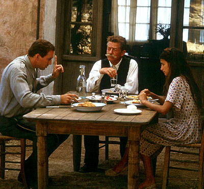

- Editor's Page
They Call Me Jackie Robinson in Brazil
- Current events
- Features
- Fiction
- Antroposophy
- Poetry
- Words And Music
- Letters
- E-books
- Search
- Old Issues
- Contact
- ↑
SouthernCrossReview
SouthernCross
ReviewReview of fiction, education, science, current events,
essays, book reviews, poetry and AnthroposophyNumber 125, July - August 2019
"Joy of Life"
Henri Matisse (French: 31 December 1869 – 3 November 1954) was a French artist, known for both his use of colour and his fluid and original draughtsmanship. He was a draughtsman, printmaker, and sculptor, but is known primarily as a painter. Matisse is commonly regarded, along with Pablo Picasso, as one of the artists who best helped to define the revolutionary developments in the visual arts throughout the opening decades of the twentieth century, responsible for significant developments in painting and sculpture. His mastery of the expressive language of colour and drawing, displayed in a body of work spanning over a half-century, won him recognition as a leading figure in modern art.
 Browse in the SCR E-book Library
Browse in the SCR E-book LibraryTolstoy, an artillery officer who fought at Sevastopol, who knew his stuff, who was a hell of a man anywhere you put him—bed, bar, in an empty room where he had to think. I started out very quiet and I beat Mr. Turgenev. Then I trained hard and I beat Mr. de Maupassant. I’ve fought two draws with Mr. Stendhal, and I think I had an edge in the last one. But nobody’s going to get me in any ring with Mr. Tolstoy unless I’m crazy or I keep getting better.
Ernest Hemingway
Editor's Page
The Rub

I was sitting on the veranda, the winter sun high enough to warm me. I closed the book I was reading – a kindle edition of Stephen King's The Green Mile – and looked into the small forest which began about thirty yards from where I was sitting. I saw a face there within the green. It was unclear, unfocused, so to speak. A cloud-like formation crept from the right to cover it, but then dissipated. I tried to determine who it was, but could not. I thought of Jesus, whom I had had occasion to meet some years ago in a dream. He was in modern informal dress accompanied by a young woman. They were holding hands approaching us, me and my friend John Rogan, walking on the water! That's how I knew he was Jesus. I mean who else walks on water? It seemed logical that the girl was Mary Magdalene, but I didn't really know, just assumed it... Continue reading
Current Events
War By Bomb - Ten Tenets of Air Power That I Didn’t Learn in the Air Force by William J. Astore
From Syria to Yemen in the Middle East, Libya to Somalia in Africa, Afghanistan to Pakistan in South Asia, an American aerial curtain has descended across a huge swath of the planet. Its stated purpose: combatting terrorism. Its primary method: constant surveillance and bombing -- and yet more bombing. Its political benefit: minimizing the number of U.S. “boots on the ground” and so American casualties in the never-ending war on terror, as well as any public outcry about Washington’s many conflicts. Its economic benefit: plenty of high-profit business for weapons makers for whom the president can now declare a national security emergency whenever he likes and so sell their warplanes and munitions to preferred dictatorships in the Middle East (no congressional approval required).
Continue reading.
The Fake News of D-Day:
Knowing Whom to Remember and How to Forget
by Andrew J. BacevichHow best to describe the recently completed allied commemoration of the 75th anniversary of the D-Day invasion of France? Two words come immediately to mind: heartfelt and poignant. The aged D-Day veterans gathering for what was probably the last time richly deserved every bit of praise bestowed on them. Yet one particular refrain that has become commonplace in this age of Donald Trump was absent from the proceedings. I’m referring to “fake news.” In a curious collaboration, Trump and the media, their normal relationship one of mutual loathing, combined forces to falsify the history of World War II. Allow me to explain... Continue reading
Book Reviews
Dementia - Anthroposophical Perspectives
by Judith von HalleJudith von Halle is mostly known for her books and lectures about the life and meaning of Jesus Christ. In this book she concentrates on a medical phenomenon which today has taken on the characteristics of a plague. Senility, involving short term memory loss and the general weakening of mental faculties associated with old age, has been known for centuries, but the illness we now call dementia or, in its more extreme stages, Alzheimer’s disease, has become more and more prevalent in modern society. Not only the aged are affected, but symptoms have been detected increasingly in the middle-aged, even in children. Before going further, it should be noted that there is a difference between “normal” old age forgetfulness and the illness which can lead to the affected persons becoming little more than living vegetables. The former is benign, the latter devastating... Continue reading
Corelli's Mandolin

by Louis de BernièresWhile researching for a recent article about the relationship between Germany and Greece in the Euro-zone mess, I came across a reference in Wikipedia to the book “Corelli's Mandolin”, and remembered having seen the movie based on it with Nicholas Cage and Penelope Cruz a number of years back, and having enjoyed it. On impulse I ordered the book from Amazon. Why not – despite having being written by a Brit with a French name I'd never heard of. It turns out that “Corelli's Mandolin” overflows with love, life, death, humor, pathos, war, romance and history. It will have you crying on one page and laughing on the next, and occasionally both on the same page – at least it did me...
Continue reading
Features
The Man Who Saw Trump Coming A Century Ago - Thorstein Veblen
A Reader’s Guide for the Distraught
by Ann JonesDistracted daily by the bloviating POTUS? Here, then, is a small suggestion. Focus your mind for a moment on one simple (yet deeply complex) truth: we are living in a Veblen Moment. That’s Thorstein Veblen, the greatest American thinker you probably never heard of (or forgot). His working life -- from 1890 to 1923 -- coincided with America’s first Gilded Age, so named by Mark Twain, whose novel of that title lampooned the greedy corruption of the country’s most illustrious gentlemen. Veblen had a similarly dark, sardonic sense of humor. Now, in America’s second (bigger and better) Gilded Age, in a world of staggering inequality, believe me, it helps to read him again...Continue reading
Eating Someone - Farmed animals have personalities, smarts, even a sense of agency. Why then do we saddle them with lives of utter despair?
by Lori Marino
We’ve all heard them and used them – the common references to farmed animals that appeal to the worst part of human nature: ‘pearls before swine’, ‘what a pig’, ‘like lambs to the slaughter’, ‘bird brain’. These phrases represent our species’ view of farmed animals as not particularly bright, uncaring about their treatment or fate, and generally bland and monolithic in their identities. My team of researchers asked: ‘What is there to really know about them?’ Our answer: plenty. I’ve had the privilege of being the lead scientist for the Someone Project, a joint venture of two US nonprofit organisations, the Kimmela Center for Animal Advocacy, and Farm Sanctuary. The Someone Project is an exploration of our scientific knowledge of the minds of farmed animals. My co-authors and I have explored the peer-reviewed literature on intelligence, personality, emotions and social complexity in pigs, chickens, cows and sheep, and the journey ‘inward’ into the minds of these animals has been nothing short of revelatory... Continue reading
Science
Evolution As It Was Meant To Be - An Overview
by Stephen L. Talbott
Every organism is continually dying in order to live. Breaking-down activities are prerequisites for building up. Complex molecules are synthesized, only to be degraded later, with their constituents recycled or excreted. In multicellular organisms such as vertebrates, many cells must die so that others may divide, differentiate, and proliferate. Many cancers reflect a failure to counterbalance proliferation with properly directed death processes. You and I have distinct fingers and toes thanks to massive cell death during development. The early embryo’s paddle-like hands give way to the more mature form as cells die and the spaces between our digits are “hollowed out”... Read more
The Genuine Copernican Cosmological Principle
by Konrad Rudnicki
he question of what the Universe looks like when observed from a planet has excited human minds for a long time. Cicero (10-3 B.C.) in his Republic describes "Scipio's dream" (Somnium Scipionis) where, according to the general beliefs of that epoch, the Universe seen from other planets was completely different than when seen from the terrestrial perspective. Nicolaus Copernicus (1473-1543), however, provided an answer completely contradicting the ancient outlook. He came to the opinion that the Universe seen from any planet would look much the same as when seen from the Earth. He considered the Earth to be just one of the planets... Continue reading.
Fiction
The Crook Loses His Stuff
by Gaither StewartStaff Sergeant Henry Simmons was sitting on the corridor side of the spacious office, a frown on his face and surprise in his eyes. He was not used to bad moods in his happy-go-lucky superior who this morning had been downright churlish with him. Just the sound of the officer’s voice when he arrived had augured bad news. Henry stretched his arms across his littered desk, his palms turned upwards in an expression of bewilderment.
“Sergeant, er, Henry,” the Lieutenant said with unusual impatience in his tone, “let’s take another look at that memorandum from the Colonel about our flight to Rome.” First Lieutenant Michael Cruickshank scowled across the room, drummed with his long fingers on his clean desk and added in a murmur: “the son-of-a-bitch”. ... Continue readingTram 13 to Opernplatz
by Frank Thomas Smith
Smith awoke from his siesta and felt like he’d just parachuted into enemy territory, something he actually did once, into France on D-Day. He couldn’t remember the jump itself, only the jolt of the landing. It was like waking up. He went into the bathroom to urinate and splash cold water on his face. Then he opened the door to the living room, which looked familiar. There were a few people sitting around, but the only ones he recognized were Fleur and Rafael. Fleur, although aging (at last), still as tall and beautiful as ever, Rafael taller still, balding, bearded (today – the beard comes and goes), silent as usual. No one paid attention to Smith’s entrance, he sat in an armchair and watched them but they didn’t watch him... Continue reading
Anthroposophy
Esoteric Lessons for the First Class - Recapitulaion 1
by Rudolf Steiner
First Goetheanum As it turns out, many more friends have come to this Class Lesson – and probably will to the next lessons as well – who had not attended the previous ones. So it would be impossible to simply continue in the same way as we have with the previous lessons. But it is also true that a repetition of these Class Lessons will not be a disadvantage for those members of this esoteric school who participated in the earlier lessons, because the content of this esoteric school is such that it works again and again on the soul. Therefore, for those who today are experiencing a repetition, it also constitutes a continuation. But for all those who are here for the first time it means something else: it means an acquaintance with the beginning of the esoteric path... Continue
Understanding Modern History - Lecture 2
by Rudolf SteinerYesterday I attempted to sketch in broad outline the symptoms of the recent historical evolution of mankind and finally included in this complex of symptoms — at first not pursuing this in greater detail, for we shall have time for that later on, but confining ourselves more to the general characteristics — the strange figure of James I, King of England, at the beginning of the seventeenth century. This enigmatic figure appeared on the stage of history midway between the beginning of the fifth post-Atlantean epoch and the nineteenth century, a century that was important and decisive. It is not my task today — we can discuss this later — to speak of the many mysteries associated with the personality of James the First. I must, however, draw your attention to the strange part, strange in a symptomatic manner, which James I plays in contemporary history. He was a man who was a bundle of contradictions and yesterday I attempted to show two contradictory aspects of his character. One can point to his virtues or his defects, according to one's point of view... Continue reading
Materialism, Spiritism and the Need for Spiritual Science
by Rudolf SteinerWe have frequently emphasized that the spiritual science is related to what is commonly called science today in the following way. Modern science, which has been pursued by mankind — rightly and for good reasons — for three or four centuries, resembles a description of single letters that are printed or written on a sheet of paper. At best, it resembles the phonetic or grammatical rules by which these letters are grouped into words or united to form sentences. What we call the laws of nature can be compared with phonetic or grammatical rules. Thus, if we were to examine a printed or written page and say that we can see first a stroke upwards to the right, a stroke going down to the left and so on, and then describe the other letters and perhaps even the rules pertaining to phonetics or grammar, this way of relating to a printed or written page would resemble what is correctly called science today. But if we were to do no more than observe in this way, our relation to the printed or written page would be completely inadequate because we can also read... Continue reading
Poetry
The Drone Cometh
by Frank Thomas Smith
The wedding partyAll the people of the village unite
to sing and drink and dance the night;
The bride is lovely in her new white gown
Her smile lights up all the town.
Look out, be careful, the drone's a-comin'
The time has come to think of runnin'!
All the people so happy and gay
The groom knows not what to say,
The mother of the bride with pride is swollen;
A moment of peace is being stolen.
Look out, be careful the drone's a-comin'
The time has come to think of runnin' ...Continue
Rootless in Patagonia
by Alistair PotterIn anyone over a certain age
Creepy questions arise unbidden
Given they're dead statistically
For life and health insurance companies.
Credit cards keep their distance
Preferring rosy-cheeked lads and lassies.
Mephisto shuffles center-stage
left to right, gloom to light,
Ready to draw and swipe his scythe.
The old, they say, are almost dead,
Due to dreadful destiny,
karma, to be borne smilingly.
Karma includes birth and death!
Granted, your Grace, but you have roots
In Mexico, Moscow, Milwaukee, Mongolia...
Continue
The Raven
by Edgar Allen Poe
Once upon a midnight dreary, while I pondered weak and weary,
Over many a quaint and curious volume of forgotten lore,
While I nodded, nearly napping, suddenly there came a tapping,
As of some one gently rapping, rapping at my chamber door
'Tis some visitor,' I muttered, 'tapping at my chamber door -
Only this, and nothing more... Continue
Words and Music
Sara
by Bob Dylan
Sara and Bob DylanI lay on a dune, I looked at the sky,
When the children were babies and played on the beach.
You came up behind me, I saw you go by,
You were always so close and still within reach.
Sara, Sara,
Whatever made you want to change your mind?
Sara, Sara,
So easy to look at, so hard to define.
I can still see them playin' with their pails in the sand,
They run to the water their buckets to fill.
I can still see the shells fallin' out of their hands
As they follow each other back up the hill.
Continue and Listen

Letters to the Editor
You can find us under the Southern Cross in the Traslasierra Valley, Province of Córdoba, Argentina. Visitors always welcome. Just follow the sign that reads: La Cruz del Sur.
Frank Thomas Smith, Editor
Contact
Author Guidelines
Older Issuessso we can advise you when the next issue is ready.
You can search for authors or titles, entering names or keywords in the Google search box below.